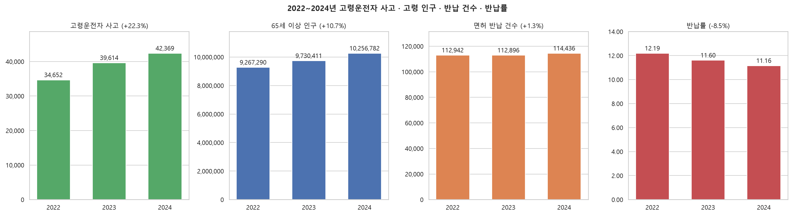
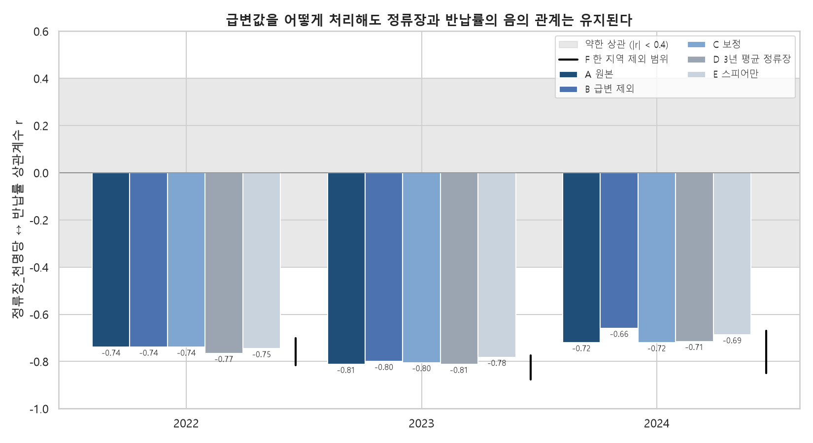
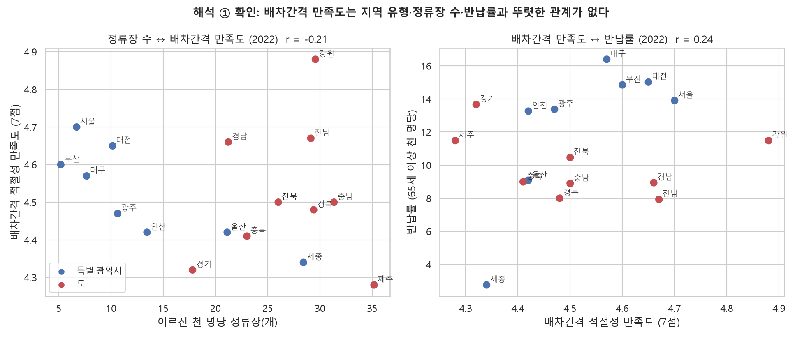
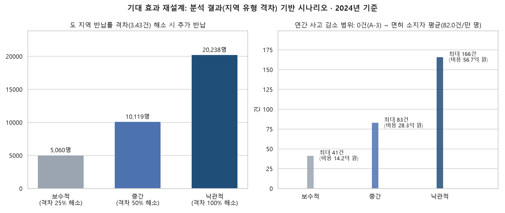

늘어나는 고령 운전자 사고, 면허 반납을 가로막는 교통 공백 (KDT 미니프로젝트 3, 1조)
팀 프로젝트를 마친 뒤 회고에서 아쉬운 점 네 가지를 정리하고, 각각을 공식 데이터로 다시 확인했다. 그 결과 일부 결론은 더 단단해졌고, 일부 해석과 기대 효과는 근거가 약하다는 점이 드러났다. 이 문서는 그 결과를 반영해 결론·제언·기대 효과·한계를 다시 쓴 것이다.
| 아쉬웠던 점 | 보완한 내용 | 결과 |
|---|---|---|
| ① 정책 수집이 6건에 그침 | 정책브리핑 2015~2025(1,392건 → 48건), 시도 조례(377건 → 182건), 국회 법안(754건 → 40건)으로 확장 | 세 출처 모두 면허·보행 대책 중심, 이동권 대책은 드묾 |
| ② 정류장 수치 급변 미검증 | 급변값 처리 6가지 민감도 분석, 2018~2024 장기 추이, 배차간격 만족도 대조, 제공기관 문의 | 음의 관계는 튼튼함. 단 "배차 부족" 해석은 지지되지 않음 |
| ③ 기대 효과가 단순 추정치 | 공식 통계(TAAS·KOSIS·도로교통공단 보고서)로 재계산, 지역 격차 기반 시나리오, 사고 감소 범위 제시 | 가정 1개만 남기고 모두 계산값으로 교체 |
| ④ 치사율 가설이 주제와 무관 | 치사율은 배경으로 옮기고, 반납률과 사고 증가율 가설로 교체·민감도 분석 | 새 가설도 기각. 반납과 사고는 시도 단위에서 연결되지 않음 |
팀 보고서의 네 가지 사실은 유지하되, 보완 분석으로 확인한 내용을 덧붙이고 두 가지 사실을 추가했다.
고령운전자 사고는 2022년 34,652건에서 2024년 42,369건으로 22.3% 늘었고, 65세 이상 인구 천 명당 반납률은 12.19건에서 11.16건으로 8.5% 줄었다. 분모를 고령 면허 소지자로 바꾸면 반납률 감소는 −14.0%로 더 크다. 반면 면허 소지자 1만 명당 사고는 78.98건에서 82.01건으로 +3.8%에 그쳤다. 사고 증가는 운전이 더 위험해져서라기보다 고령 면허 소지자가 438.7만 명에서 516.6만 명(+17.8%)으로 늘어난 영향이 크다.

고령화율과 반납률의 상관계수는 3년 모두 |r| ≤ 0.18로 관계가 없었다(팀 결과 유지).
정류장_천명당과 반납률은 r = −0.72 ~ −0.81(p < 0.01)이었다. 정류장 원자료는 해마다 2~6개 시도에서 ±10% 넘게 흔들리는 문제가 있지만, 급변값을 제외·보정하거나 3년 평균·순위 상관을 써도 r = −0.66 ~ −0.88로 결론이 바뀌지 않았다.

반납률과 고령사고(1만 명당)는 r = 0.23 / −0.06 / −0.15로 관계가 없었다(A-3 기각). 새로 세운 가설 "2022년 반납률이 낮은 시도일수록 2024년까지 사고가 더 빨리 늘었다"도 r = −0.35로 기각됐고, 세종 한 곳을 빼면 +0.20으로 방향이 바뀌었다.
특별·광역시의 반납률은 3년 내내 도보다 높았다(2024년 13.13건 vs 9.70건). 지금까지 확인한 변수 중 반납률 차이와 가장 일관되게 맞는 것은 지역 유형이다. 반면 배차간격 만족도(한국교통안전공단)는 대도시 4.52점, 도 4.52점(2022)으로 차이가 없었고, 반납 지원 조례 보급률도 반납률과의 상관이 |r| < 0.4였다.

| 출처 | 관련 대책 | 주된 유형 | 이동권 대책 |
|---|---|---|---|
| 정부 (정책브리핑, 2015~2025) | 48건 | 보행 20 · 면허·적성 15 | 2건 |
| 지자체 (현행 반납 지원 조례) | 182건 | 면허 반납 지원 (지원액 중앙값 20만 원) | – |
| 국회 (20~22대 도로교통법·교통안전법) | 40건 | 면허·적성 18 · 보행 13 (원안 가결 0건) | 0건 |
팀 결론: 면허 반납을 가로막는 것은 정류장의 개수가 아니라, 차를 대신할 이동 수단의 부족이다. ("정류장의 수가 아니라, 버스가 얼마나 자주 오느냐")
바꾼 이유: 팀 결론은 사실 ③(정류장 ↔ 반납률 음의 관계)에서 출발한 해석이었다. 보완 분석에서 그 해석을 직접 확인할 수 있는 데이터(배차간격 만족도)와 다른 후보(반납 지원 조례)를 대조했지만 둘 다 반납률 차이를 설명하지 못했다. 그래서 확인된 사실과 남은 가설을 구분해 다시 썼다.
팀 제언의 방향은 유지하되, "효과가 확인된 대책"이 아니라 "시범 적용하고 효과를 측정할 대책"으로 바꿨다. 반납만으로 사고가 줄어든다는 근거가 약하므로(사실 ④), 운전을 계속하는 어르신의 안전 대책을 함께 둔다.
| 구분 | 팀 제언 | 개인 보완판 제언 |
|---|---|---|
| ① 이동 수단 | 반납은 적고 정류장은 많은 전남·세종·충북·경북에 수요응답형 버스 우선 배치 | 시범 도입 + 효과 측정. 반납률 하위 도 지역 일부 시군에 수요응답형 버스를 먼저 도입하고, 도입하지 않은 비슷한 시군과 도입 전후 반납률(면허 소지자 기준)을 비교한다. 정부도 2024년 10월부터 도입을 촉진하고 있어 비교 자료를 만들기 좋은 시점이다. |
| ② 반납 지원 | 면허 반납 시 교통카드와 호출형 버스 이용권 함께 제공 | 지원의 '유무'보다 '내용'을 평가. 조례 보급률은 반납률 차이를 설명하지 못했다. 지원 금액(10만~50만 원)과 실제 집행액, 이동 수단 연계 여부를 함께 공개·비교해야 한다. 반납률이 가장 낮은 전남·광주는 반납 지원 조례가 검색되지 않아 지원 체계를 먼저 점검할 필요가 있다. 국회에 계류 중인 반납 지원 법제화 법안(2026-06)이 통과되면 지역별 지원 수준을 같은 기준으로 공개하도록 한다. |
| ③ 운전 지속자 안전 | 사고가 많은 대전·제주·광주에 조건부 면허와 페달 오조작 방지 장치 적용 | 유지·강화. 고령사고(1만 명당)가 가장 많은 대전 60.5건, 제주 60.2건, 광주 58.0건(2024)에 페달 오조작 방지 장치(2024~2025 경찰청 사업)와 조건부 면허·적성검사 개선을 우선 적용한다. 반납을 늘리는 것만으로 사고가 준다는 근거가 약하므로 이 대책의 비중을 높인다. |
| ④ 데이터 (추가) | – | 판단에 필요한 통계 공개 요청. 시도별·연령별 운전면허 소지자, 반납자의 연령·지역, 시군구별 반납 실적, 정류장 집계 기준(연도별 변경 이력)을 공개하면 대책 효과를 직접 측정할 수 있다. 정류장 집계 기준은 2026-11-10 한국교통안전공단에 문의했다. |
Action Item — 누가: 지자체·국토교통부(이동 수단), 경찰청(면허·안전장치), 행정안전부·지자체(반납 지원) / 어디에: 반납률 하위 도 지역 시범 시군, 고령사고 상위 3개 시도 / 무엇을 측정: 면허 소지자 기준 반납률, 고령운전자 사고(면허 소지자 1만 명당).
팀 보고서는 "반납률 하위 5개 시도를 전국 평균까지 올리면 5,760명이 더 반납하고 사고가 연 27건, 비용이 2.6억 원 준다"고 추정했다. 이 값은 목표가 분석 결과와 연결되지 않았고, 사고 위험 분모에 면허 없는 어르신이 포함됐으며, A-3 결과(반납과 사고의 관계 없음)와 반대되는 전제를 썼다. 그래서 모든 입력값을 공식 통계로 바꾸고, 사고 감소를 범위로 다시 계산했다.
| 시나리오 (2024년 기준) | 추가 반납 | 사고 감소 (연) | 사망 감소 (연) | 인적피해 비용 절감 (연) |
|---|---|---|---|---|
| 보수적 — 도·대도시 반납률 격차 25% 해소 | 5,060명 | 0 ~ 41.5건 | 0 ~ 0.75명 | 0 ~ 14.2억 원 |
| 중간 — 격차 50% 해소 | 10,119명 | 0 ~ 83.0건 | 0 ~ 1.49명 | 0 ~ 28.3억 원 |
| 낙관적 — 격차 100% 해소 | 20,238명 | 0 ~ 166.0건 | 0 ~ 2.98명 | 0 ~ 56.7억 원 |
| (참고) 팀 보고서 | 5,760명 | 27.2건 | – | 2.6억 원 |

| 자료 | 기관 · 경로 |
|---|---|
| 고령운전자 사고·사상자 | 한국도로교통공단 TAAS 교통사고분석시스템 「노인운전자 교통사고」, 도로교통공단 API(팀 수집) |
| 고령 면허 소지자 | KOSIS 「운전면허소지자현황(연령대별)」 경찰청 (DT_13201_A002) |
| 사고비용 단가 | 한국도로교통공단 「도로교통 사고비용의 추계와 평가」 2023·2024·2025년판 (TAAS 통계보고서) |
| 인구·반납 | 행정안전부 주민등록 인구통계, 경찰청 고령운전자 자진반납 현황 (공공데이터포털) |
| 버스정류장·만족도 | 한국교통안전공단 대중교통현황조사 — 공공데이터포털 15066754, 15066827 |
| 정부 대책 | 대한민국 정책브리핑 보도자료·정책뉴스 (korea.kr) |
| 지자체 조례 | 법제처 국가법령정보 공동활용 Open API (현행 자치법규) |
| 국회 법안 | 열린국회정보 Open API (국회의원 발의법률안, 법률안 제안이유 및 주요내용) |
분석 코드와 결과표: 개인 저장소 개선/ 폴더 (01_기대효과, 02_A2가설, 03_정류장검증, 04_크롤링확장, 05_조례, 06_법안). 회고 전문: 프로젝트회고.md.